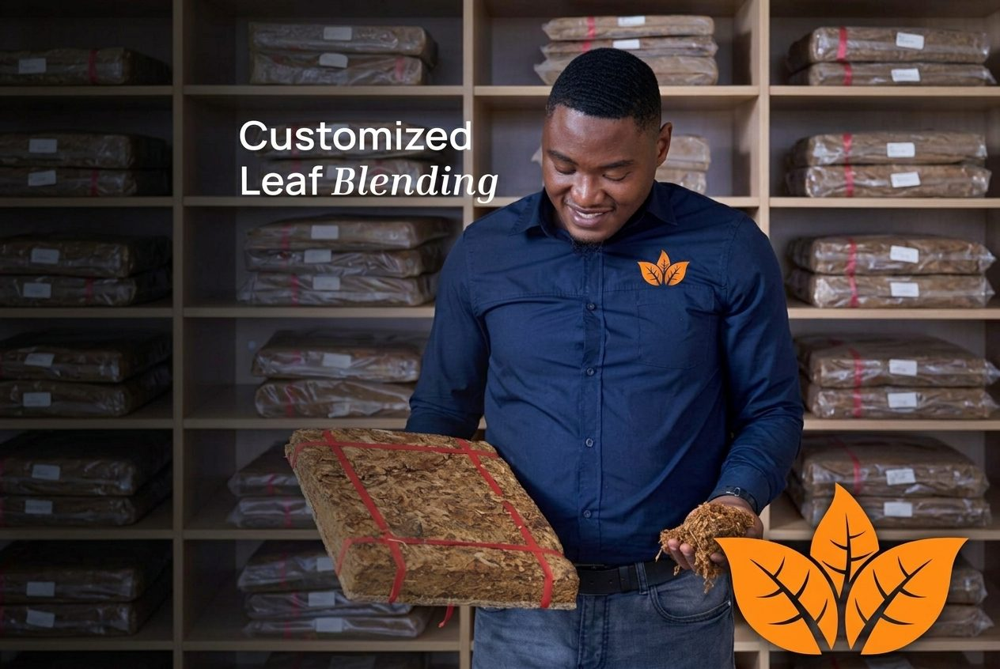
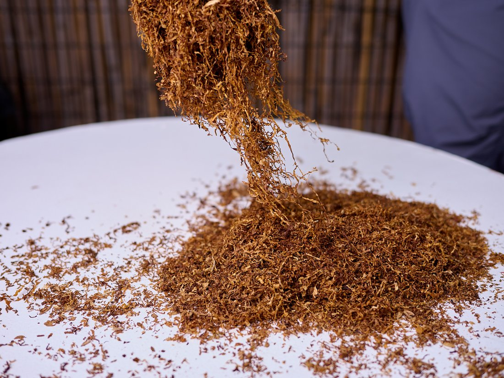
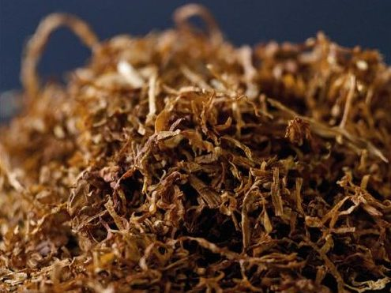
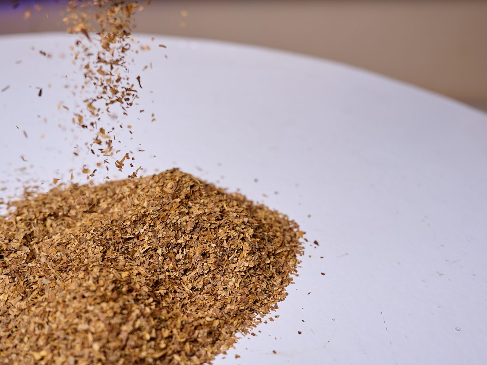
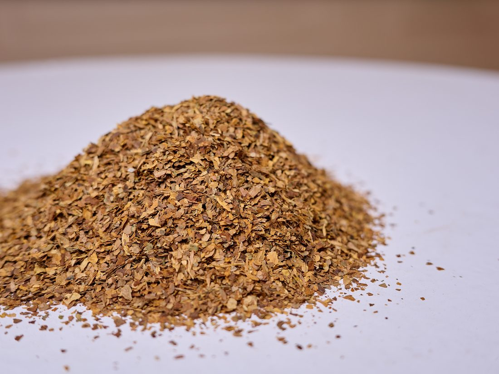

Home / Gallery
Gallery
The crop, the floor and the leaf
Photographs from the farms we contract and from our own processing floor in Harare. Tap any frame to see it full size.


In the field
Where the crop comes from


The leaf
What leaves the floor










Talk to us
Want to see a sample?
Tell us the grade and volume you are after and we will send what we have, with current pricing.